Introduction
The Master Data Synchronisation module (MDS for short) helps you replicate master data from a master company in one or more client companies. In doing so, you can choose to replicate all fields or only selected fields in a table. The tables to be synchronised can be configured as desired.
The synchronised data can only be edited in the master company. If users attempt to edit the synchronised data in a client company, they will receive an error message. This edit lock only applies to synchronised data. If you only transfer some of the fields in a table, the remaining fields can still be edited.
The tables to be synchronised are organised into sets. One table can appear in multiple sets. You can use filters to restrict the records of a table to be synchronised within a set. This allows you to update data specific to certain operations while updating the master company.

Modifications are not immediately synchronised, but rather called by the client companies using the Pull method. The synchronisation interval can be defined in the client company for each set. The data is synchronised using an OData service offered by the master company, which functions beyond the boundaries of databases and servers.
Data Synch. Set
Modifications are not immediately synchronised, but rather called by the client company using the Pull method. The synchronisation interval can be defined in the client company for each set. The data is synchronised using an OData service offered by the master company, which functions beyond the boundaries of databases and servers.
You will find the Data Synch. Set List in the main menu under:
Departments/ Administration/ Application Setup/ Master Data Synchronisation/ Data Synch. Set List
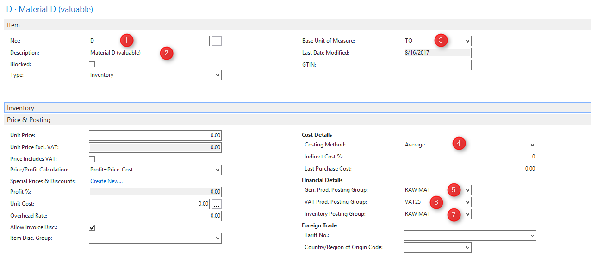
| Code |
|---|
| Enter the unique identification code for the data synch. set here. |
| Description |
| Enter a short description of the data synch. set here. |
| Allow BLOB Fields |
| Tick this box to allow the application to synchronise BLOB fields. Please note that synchronising BLOB fields can significantly increase the data volume. |
| Active |
|---|
| Tick this box to publish the data synch. set. When this box is ticked, you cannot redefine the data synch. set. |
When you tick this box, the application begins to track changes. This might take some time under certain circumstances. Table Caption | | Enter the name of the table here that you would like to synchronise. You also have the option of entering the table ID in this field or of drilling down and selecting the table. Filter Method | | You have two options here: Filter and Selected. If you choose Filter, you can go to the Table Filter field to define it. You should choose Selected if you want to pick individual records for synchronisation.
When you insert a table, the value in this field is automatically updated accordingly. Users cannot edit this value once the table is inserted. Table Filter | | You can define a filter here that restricts the records to be synchronised. For further information on defining table filters, see Chapter 2.1 Limiting records.
. Synch. Fields | | Enter the fields of a table to be transferred here. You can either select All Fields or Some Fields. If you choose Some Fields, you have to define the fields to be synchronised. For further information on defining fields, see Chapter 2.2 Define Fields.
Limiting records
You can limit the records to be synchronised by either applying table filters or individually selecting the records to be synchronised.
There is a third option for limiting the records to be synchronised that consists of defining relationships. In this case, the only records that will be synchronised are those with a relationship to an already synchronised record.
Define Table Filter
To define a table filter, select "Filter" in the Filter Method field. In the Table Filter field then click on the AssistEdit to define the filter.
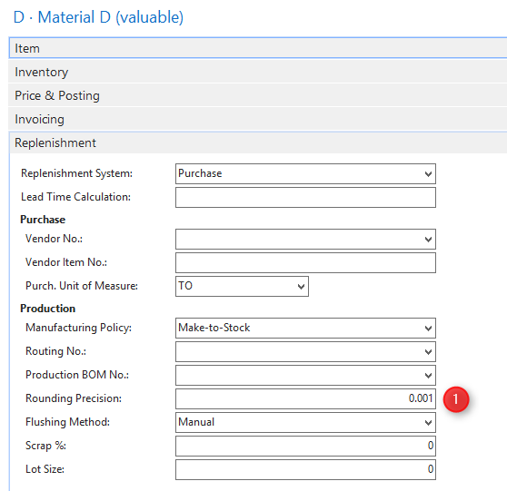
| Field Caption |
|---|
| Enter the name of the field here for which you want to define a filter. You can also drill down and select the field. |
| Type |
| Here you should select either "CONST" for a constant value or "FILTER" to enter a complex filter string. |
You can only select "FIELD" if you have defined a relationship beforehand. Field Filter | | Enter the filter string here that you want to apply to the field. You can drill down to find the field value for fields with a table relationship and optional fields.
The records in the filter to be synchronised can always be viewed by using the function
Lookup Table
.
Define Record Selection
If you choose the "Selected" option in the Filter Method field you can use the AssistEdit in the Table Filters field to select the records to be synchronised.
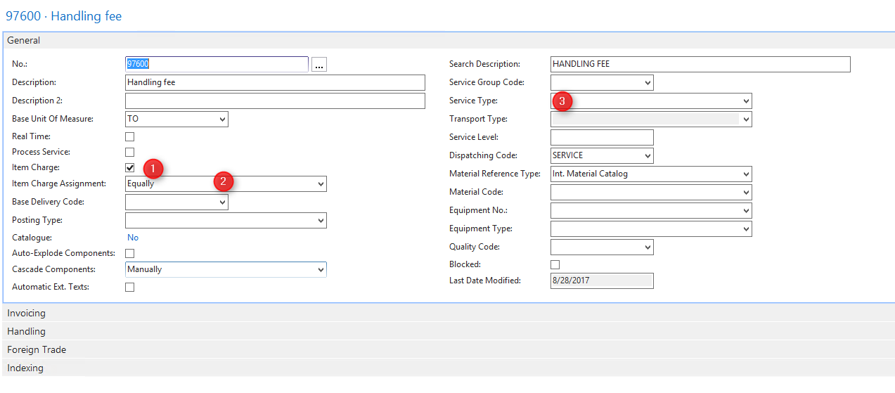
| Record ID |
|---|
| Drill down to select the record you would like to synchronise. |
| Description |
| The application shows the field name or label of the selected record in this field. You cannot edit the content of this field. |
In contrast to the table filters, you can still modify this list if you have ticked the Active box in the data synch. set.
Define Relationships
You can only define a relationship between two tables that have been inserted. The application then changes the Filter Method field to "Relationships". You cannot edit the content of this field.
You can insert a table into the set definition by using the INSERT function in the Data Synch. Set window. When you want to cancel an existing relationship, use the REMOVE function. The application then re-sets the Filter Method field to "Filter" and removes defined table relationships.
You can define table relationships to tables higher in the hierarchy using the Table Filter field's AssistEdit.
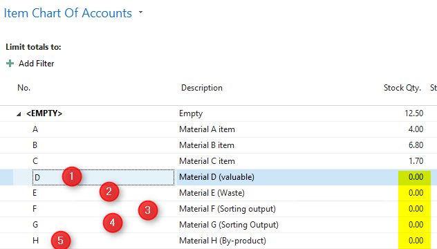
| Field Caption |
|---|
| Enter the name of the field here for which you want to define a filter. You can also drill down and select the field. |
| Type |
| Here you should select either "CONST" for a constant value, "FILTER" to enter a complex filter string or "FIELD" to enter a field relationship. |
| Field Filter |
| Enter the filter string here that you want to apply to the field. You can drill down to find the field value for fields with a table relationship and optional fields. If you use the "FIELD" type, you can select a field in a table higher in the hierarchy. |
Define Fields
Using the Field Synch. field in the Data Synch. Table table, you can define whether all fields should be synchronised or only certain fields. If you choose "Some Fields", you can use AssistEdit to select the fields to be synchronised.
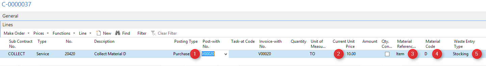
Primary key fields are displayed in bold, blue letters in this window. These fields are selected automatically and cannot be de-selected.
| Selected |
|---|
| Tick this box to synchronise a field. |
Note: When a table appears multiple times within one set, the Field Synch. field needs to have the same setting in all records. The same is true for the field definition.
OData Web Service
To allow client companies to call data, you must set up a Web service for the master company. You can have the application set up a web service using the
Create Web Service
function under Data Synch. Setup. The Web service will then be published under the name "ChangeTracking".
You can also set up the Web service manually in the Web Services table.
Departments/ Administration/ IT Administration/ General/ Web Services
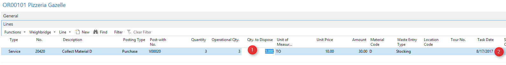
| Object Type |
|---|
| Select the option page here to publish an OData web service for the synchronisation. |
| Object ID |
| Enter ID 5228792 here. |
| Service Name |
| Enter the name of the service you would like to publish it under. |
| Published |
| Tick this box to publish the web service. |
You have to configure the Microsoft Dynamics NAV server for OData so that it is actually available for the Web service. For more information about configuring the server, see the Online Help.
Data Synch. Job
You define a data synch. job in the client companies. This creates a connection to a Data Synch. Set in the master company. You can set up multiple data synch. jobs in a client company with a connection to different data synch sets in different master companies.
The synchronisation takes place, with time controls, using an OData web service that must be offered by the master company. For further information on the OData Web service, see Chapter 3 OData Web Service.
Departments/ Administration/ Application Setup/ Master Data Synchronisation/ Data Synch. Job List
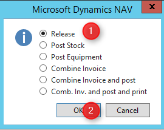
| Code |
|---|
| Enter the unique identification code for the data synch. job here. |
| Description |
| Enter a short description of the data synch. job here. |
| Data Synch. Set Code |
| Enter the data synch. set code to be offered by the master company and used by the client companies. |
| Data Synch. Host |
| Select a data synch. server in this field that should connect to the OData service of the master company. For further information on setting up a data synch. server, see Chapter 4.1 Data Synch. Server. |
| Synch.-Intervall (sec.) |
|---|
| If you use the NAS service for automatic synchronisation, enter the synchronisation interval here in seconds. The interval entered here has to be a multiple of the value in the Base Synch. Interval (Sec.) field in the Data Synch. Setup table. For further information on setting up the NAS service, see Chapter 4.3 Set up NAS Service. |
| Active |
| Tick this box to include the data synch. job in the automatic synchronisation process. |
Note: The synchronisation is executed in connection with the service tier user. Therefore, the service tier user must also be set up as user in the master company.
Data Synch. Server
The data synch. server is where you set up the connection to the OData Web service of a master company. You can also set up the connection to your own NAV client service for your internal messaging system here.
Departments/ Administration/ Application Setup/ Master Data Synchronisation/ Data Synch. Servers
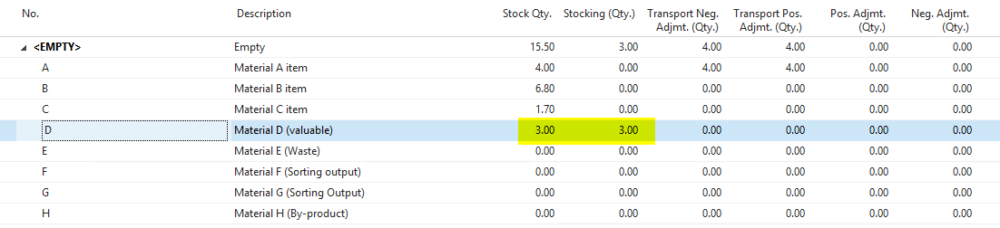
| Code |
|---|
| Enter the unique identification code for the server connection here. |
| Server Name |
| Enter the name of the server here that provides the OData service. |
| Server Port |
| Enter the port for the OData service here. |
| Instance Name |
| Enter the name of the OData service instance here. |
| Company Name |
| Enter the name of the master company here that provide the OData service. |
| Service Name |
| Enter the name of the service this is published under. |
Set up Job Queue
You may use the job queue by Microsoft Dynamics NAV for automatic synchronisation. The job queue allows you to plan data synchronisation in detail.
Departments/ Administration/ Application Setup/ Job queue/ Job Queue Entries

Set up a new Job Queue Entry for synchronisation. CodeUnit 5228782, Data Synch. via Job Queue must be entered as the object to be executed. If you wish to have the job repeated, tick the Recurring Job box.
Set up NAS Service
You can initiate synchronisation directly using an NAS service. Executing synchronisation via an NAS service allows you to configure the synchronisation in second intervals.
You configure the NAS service using the Microsoft Dynamics NAV snap-in for the Microsoft Management Console (mmc.exe).
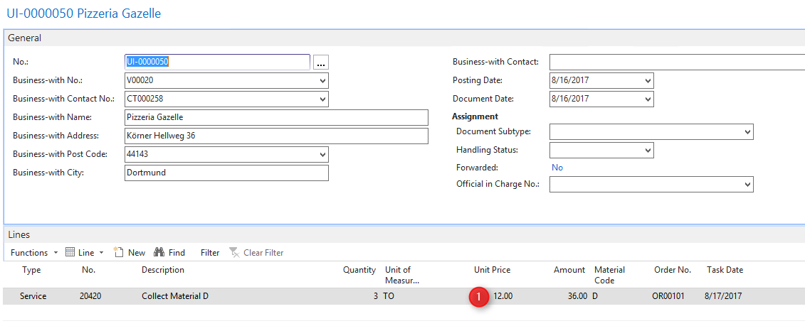
As Startup Codeunit enter the ID "5228780" for Data Synch. Mgt. You must enter "StartSynch" as the Startup Method.
Record Mapping
The records to be synchronised do not necessarily have to have the same primary key in the master or client companies. The module supports configurable links between two records.
You set up the record links in the client companies in the Data Synch. Record Mapping table.
Departments/ Administration/ Application Setup/ Master Data Synchronisation/ Data Synch. Record Mappings
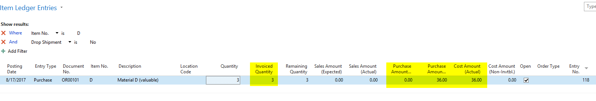
| Table Caption |
|---|
| Here you can enter the ID or name of a table, or drill down to select a table in order to narrow the list of record links. |
| From Record ID |
| Enter the record ID of the record in the master company here. |
| To Record ID |
| Enter the record ID of the record to be synchronised in the current company here. Once a lookup page has been defined in the table definition, you can also drill down here to select an existing record. |
Messaging System
The module can notify users of the success or failure of data synchronisation using multiple communication channels. You can set up the messaging system in the Data Synch. Setup table.
Departments/ Administration/ Application Setup/ Master Data Synchronisation/ Data Synch. Setup
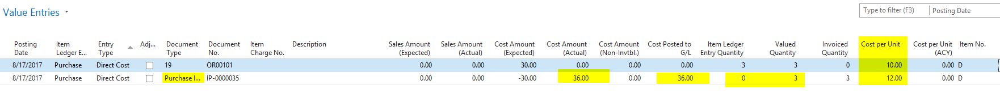
| Notify On Error |
|---|
| Tick this box if you want to be notified by the application in the event of an error. |
| Notify On Success |
| Tick this box if you want to be notified by the application when the synchronisation is successfully completed. |
Notification by e-mail
The SMTP mail function in Microsoft Dynamics NAV must be set up before you can receive e-mail messages.
Tick the E-Mail Notification box in the Data Synch. Setup table to use this communication channel. In addition, you will have to fill out the Sender's E-Mail Address and
Recipient's E-Mail Address
fields.
| Sender E-Mail |
|---|
| Enter the e-mail address to be used as the sender. |
| Receipient E-Mail |
| Enter the recipient's e-mail address here. You can also enter multiple e-mail addresses in this field, separated by semicolons. |
Notification by internal notification feature
To use the Microsoft Dynamics NAV internal notification feature, tick the Internal Messaging box in the Data Synch. Setup table. In addition, you will have to fill out the User ID and the Dynamics NAV Service Host fields.
| User ID |
|---|
| Enter the user ID of the user here who should receive the messages. The users will see the messages in their RoleCenter under My Notifications. |
| Dynamics NAV Service Host |
| Enter the connection to your Microsoft Dynamics NAV service tier here. This setting is used for the hyperlink in the messages. For further information on setting up the server, see Chapter 4.1 Data Synch. Server. |
Permissions
Different permissions are needed to use the MDS module depending on the job of the user and on the companies. The roles for permissions listed below are only suggestions and only take into account the module tables. You can also integrate the permissions into your existing role structure.
Normal User – Master Company
| MDS, Read Data Synch. | |||
|---|---|---|---|
| Type | ID | Name | Permissions |
| Table Data | 5228780 | Data Synch. Setup | R---X |
| Table Data | 5228783 | Data Synch. Set | R---X |
| Table Data | 5228784 | Data Synch. Table | R---X |
| Table Data | 5228785 | Data Synch. Field | R---X |
| Table Data | 5228786 | Data Synch. Field | R---X |
| Table Data | 5228787 | Data Synch. Change Tracking | RIM-X |
| Table Data | 5228789 | Data Synch. Record Selection | RIMDX |
User with setup permissions – Master Company
| MDS-SETUP, Set Up Data Synch. | |||
|---|---|---|---|
| Type | ID | Name | Permissions |
| Table Data | 5228780 | Data Synch. Setup | RIMDX |
| Table Data | 5228783 | Data Synch. Set | RIMDX |
| Table Data | 5228784 | Data Synch. Table | RIMDX |
| Table Data | 5228785 | Data Synch. Field | RIMDX |
| Table Data | 5228786 | Data Synch. Filter | RIMDX |
| Table Data | 5228787 | Data Synch. Change Tracking | RIMDX |
| Table Data | 5228789 | Data Synch. Record Selection | RIMDX |
OData Service User – Master Company
| MDS-ODATA, Data Synch. OData Service | |||
|---|---|---|---|
| Type | ID | Name | Permissions |
| Table Data | 5228780 | Data Synch. Setup | R---X |
| Table Data | 5228783 | Data Synch. Set | R---X |
| Table Data | 5228784 | Data Synch. Table | R---X |
| Table Data | 5228785 | Data Synch. Field | R---X |
| Table Data | 5228786 | Data Synch. Filter | R---X |
| Table Data | 5228787 | Data Synch. Change Tracking | R---X |
| Table Data | 5228789 | Data Synch. Record Selection | R---X |
Users who handle master company within the context of the OData service need permissions for the module objects as well as read permissions for the tables being offered.
Normal User– Client Company
| MDS, Read Data Synch. | |||
|---|---|---|---|
| Type | ID | Name | Permissions |
| Table Data | 5228780 | Data Synch. Setup | R---X |
| Table Date | 5228783 | Data Synch. Set | R---X |
| Table Data | 5228784 | Data Synch. Table | R---X |
| Table Data | 5228785 | Data Synch. Field | R---X |
| Table Data | 5228786 | Data Synch. Filter | R---X |
| Table Data | 5228787 | Data Synch. Change Tracking | R---X |
| Table Data | 5228789 | Data Synch. Record Selection | R---X |
User with setup permissions – Client Company
| MDS-SETUP, Set Up Data Synch. | |||
|---|---|---|---|
| Type | ID | Name | Permissions |
| Table Data | 5228780 | Data Synch. Setup | RIMDX |
| Table Data | 5228781 | Data Synch. Server | RIMDX |
| Table Data | 5228782 | Data Synch. Job | RIMDX |
Data Synch. User– Client Company
| MDS-SYNCH, Data Synchronisation | |||
|---|---|---|---|
| Type | ID | Name | Permissions |
| Table Data | 5228780 | Data Synch. Setup | R---X |
| Table Data | 5228781 | Data Synch. Server | R---X |
| Table Data | 5228782 | Data Synch. Job | R---X |
| Table Data | 5228783 | Data Synch. Set | RIMDX |
| Table Data | 5228784 | Data Synch. Table | RIMDX |
| Table Data | 5228785 | Data Synch. Field | RIMDX |
| Table Data | 5228786 | Data Synch. Field | RIMDX |
| Table Data | 5228787 | Data Synch. Change Tracking | RIMDX |
| Table Data | 5228788 | Data Synch. Log | RIMDX |
| Table Data | 5228789 | Data Synch. Record Selection | RIMDX |
Users who handle synchronisation in the client companies need permissions for the module objects as well as read and right permissions for the tables being called.
In addition, the user must have OData service user permissions in the master company from which the data will be called (see Chapter 7.3 OData Service User – Master ).